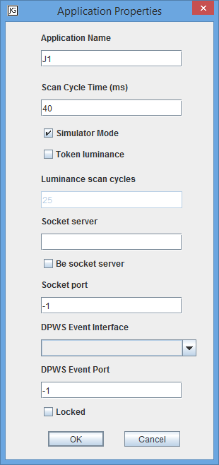

Undo the last editor operation. Only operations that are of graphical nature can be undone. Every workspace has its own undo history. The undo history is limited to 100 operations. Recording of undoable operations is turned off during execution. All operations are not undoable.
Note: The Undo/Redo feature is experimental and disabled by default. Use the command line argument -undo to enable it.
Redo the last undone operation. It is not possible to redo all operations.
Note: The Undo/Redo feature is experimental and disabled by default. Use the command line argument -undo to enable it.
Cut the current selection to the clipboard.
Copy the current selection to the clipboard.
Paste the content of the clipboard to the workspace. The default pasting position is one grid point down and one grid point to the right of the original location. To get another pasting position, click at the desired position before pasting.
Delete the current selection.
Select all objects in the current workspace.
Open the application properties dialog. Only accessible from the application's top-level workspace.

Application Name: The name of the application.
Scan Cycle Time: The period of the execution thread associated with the application in milliseconds. (Default: 40)
Simulator Mode: In simulator mode the digital and analog IO are disconnected from the real IO and the inputs may instead be set in the editor. (Default: Checked)
Token Luminance & Luminance scan cycles: Token luminance is useful for animating the execution of a function chart at high execution speeds when the token indicating the currently active step(s) moves rapidly between steps. Token luminance creates a trail of outlined and shaded tokens that follows the normal token. The luminance scan cycles decides how many scan cycles that the outlined token should be visible after the deactivation of a step. Token luminance is only supported for simple function chart objects such as steps and macro steps. (Default: Disabled, 25)
Socket Server: The IP address of the TCP socket server connected to the application. If the string is empty no connection is attempted for the application. See Socket IO for details. (Default: <empty>)
Be Socket Server: Determines if acting as server or client, see Socket IO for details. (Default: Unchecked)
Socket Port: The port number of the TCP socket server connected to the application. If it is -1 no connection is attempted for the application. See Socket IO for details. (Default: -1)
DPWS Event Interface: The network interface to use for DPWS event callbacks. If empty, DPWS eventing is disabled. (Default: <empty>)
DPWS Event Port: The port to use for DPWS event callbacks. If -1, DPWS eventing is disabled. (Default: -1)
Locked: Determines if the application is locked. (Default: Unchecked)
Open the workspace properties dialog for the current workspace.

Grid Size: Integers determining the width and height of the grid of the workspace. (Default: 10, 10)
Grid Style: Decides how the grid is drawn. (Default: Invisible)
Snap on Move: Determines when moved objects are snapped to the grid. (Default: Jump)
- No snap does not snap the object to the grid.
- Jump snaps to the grid continuously during the move.
- Afterwards snaps to the grid when the object is released.
Snap on Resize: Determines when resized objects are snapped to the grid. See Snap on Move above for details. (Default: No Snap)
Horizontal Scrollbar: Determines if the workspace has a horizontal scrollbar. (Default: Checked)
Vertical Scrollbar: Determines if the workspace has a vertical scrollbar. (Default: Checked)
Paper Color: Decides the background color of the workspace.
Socket Send Mode: The default socket send mode for objects in the workspace. See Socket IO for details. (Default for top-level: Changed, Default otherwise: <Inherit>)
Group the selected objects into a single object. Grouping is still quite error-prone.
Toggle objectification of a group. An objectified group has hidden contents and looks like a separate object, rather than a group of objects.
Toggle group border visibility. Only applicable when not objectified.
Ungroup the selected group.
Move the selected objects in front of any other objects in the workspace.
Move the selected objects behind any other objects in the workspace.